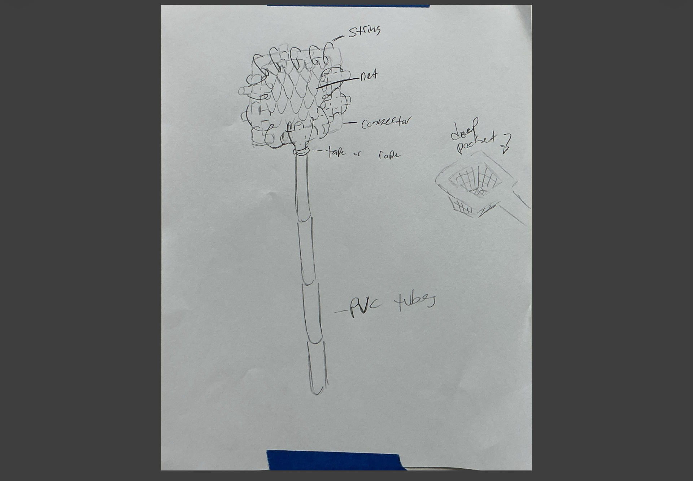
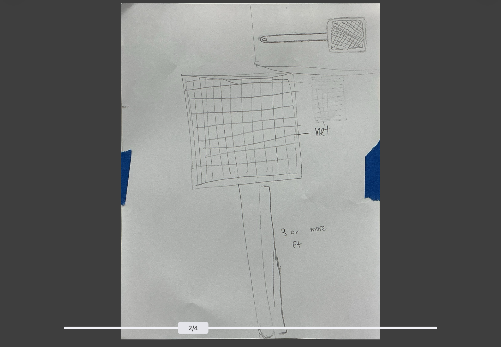
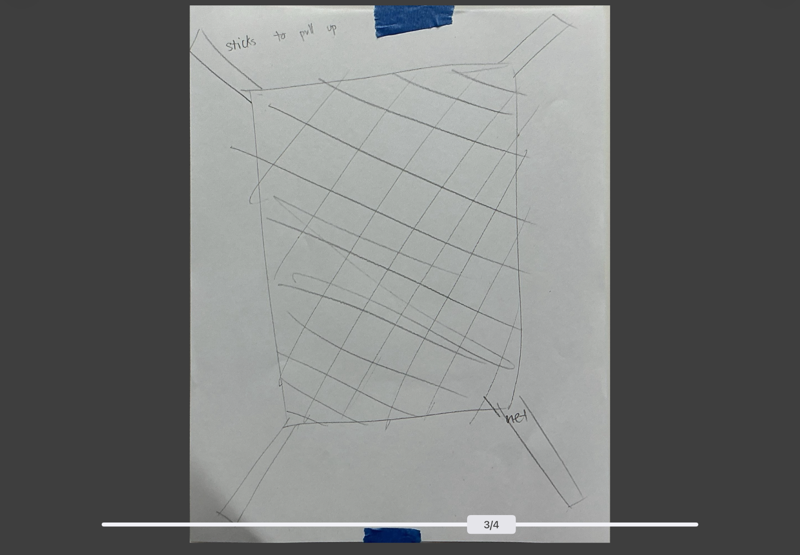
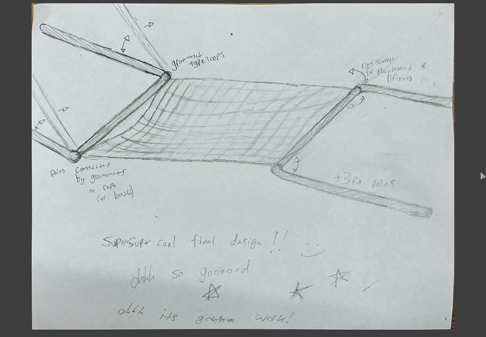
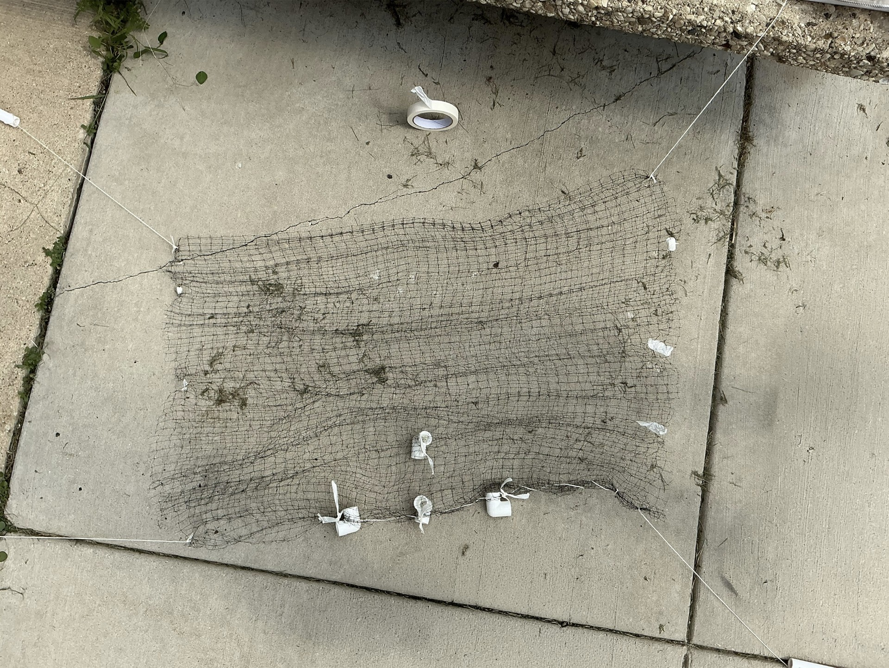
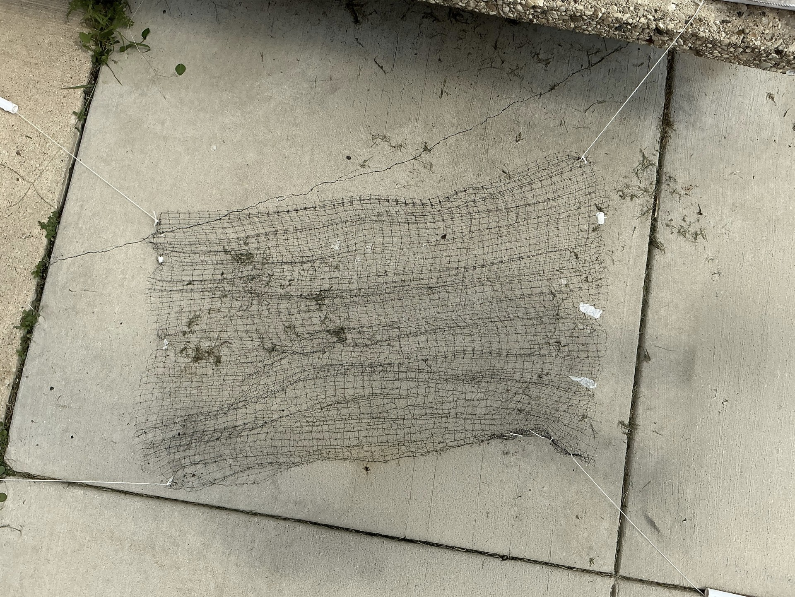

Duck Rescue Challenge
Problem Statement: Design and build a retrieval device to safely recover rubber ducks from a restricted pool area at least 3 feet away within a 2-minute time limit, without entering the water.
1. Initial Concept
Designed a wide net connected to PVC poles and extension strings to cover maximum area across the pool width.
2. Prototype #1 Failure
During initial testing, the net could not break the water's surface tension, floating on top and retrieving 0 ducks.
3. Iteration & Solution
Added strategically tied weights to force the net beneath the water surface, enabling an effective scoop and lift mechanism.
Reflection: Iterating from 0 ducks rescued to a working design demonstrated the importance of evidence-based testing. Future revisions would focus on optimizing weight placement along the net edge for a more balanced scoop.
Design Drawings & Prototype Photos

Concept Sketch 1

Concept Sketch 2

Concept Sketch 3

Concept Sketch 4

Prototype Model 1

Prototype Model 2
📄 Complete testing logs, weight calculations, and full documentation are in the engineering notebook.
Open Engineering Notebook (PDF) →